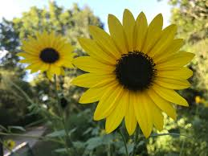

In this example, the image will float to the left in the paragraph, and the text in the paragraph will wrap around the image.
 While the vibrant, strong sunflower is a recognized worldwide for its beauty, it is also an important source of food. Sunflower oil is a valued and healthy vegetable oil and sunflower seeds are enjoyed as a healthy, tasty snack and nutritious ingredient to many foods.Sunflower is an important agricultural crop choice for US producers in the northern plains of the Dakotas to the panhandle of Texas. Browse this complete site on US sunflower production to learn about the sturdy sunflower and the healthy products it provides.